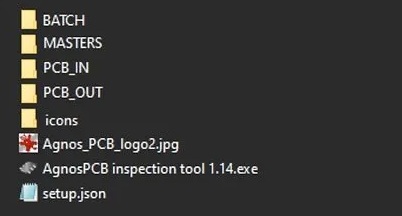
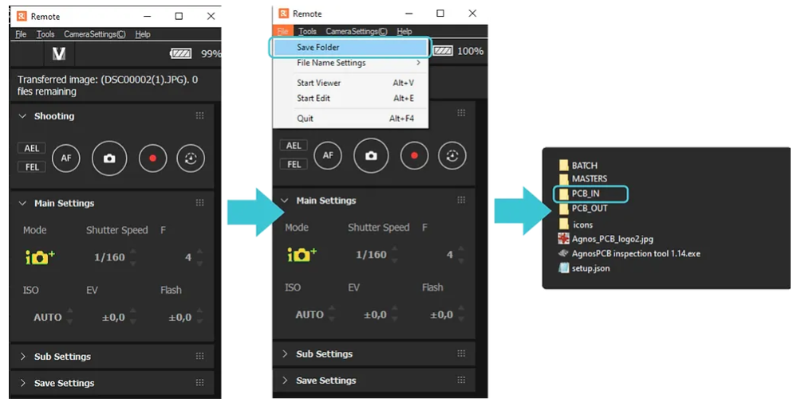

Installation process
PC System recommended Requirements
- OS:Windows 10 (64-bit)
- CPU: Intel® Core™ i5-7600 or better / Ryzen 5 2500U or better
- RAM:16GB of system memory
Internet connection - Fiber internet service : 100-1000Mbps*
The processing time is highly dependent on the transmission speed of the internet connection. The faster the speed, the faster the inspection. Wired connection to the router is highly recommended.
To install it, download the software clicking on the button above (get the password contacting us).

Windows OS: After extracting and launching the .exe file (“AgnosPCB inspection tool vX.XX.exe), the software will locally create 4 folders:
Note
Additionally, you need to install the SONY DESKTOP software if you are not using our inspection platform to take the photos of your PCB/As folders
- BATCH: by default, the folder where the software will look for photographs during the BATCH INSPECTION process (can be changed).
- MASTERS: the suggested location of the GOLDEN SAMPLES / REFERENCES images of the PCBAs
- PCB_IN: the inspection tool will look for new images of the circuit to be inspected inside this folder. If you are using our inspection platform, you have to set this folder as the default destination for the photographs taken (check image below to see how to do it)
- PCB_OUT: the destination folder of all the inspection results images.

In the REMOTE software, go to the File menu
-> Save Folder and select the Inspection tool /PCB_IN folder as the destination for the photos. That will allow the software to find the latest photos taken to your PCBAs
Agnospcb inspection tool: User interface elements
Upon launching the Agnospcb inspection tool software the user interface will appear. It has different panels and inspection areas:
- Help Icon: click to get to this USER Guide
- User account credentials: Use your user and pass credentials to get access to the inspection process.
- Activity log: provides useful information about the inspection process.
- Settings : where the configuration ICONs are. Useful tools in your inspection process.
- REFERENCE PANEL (green) : The “golden sample” image. Can be loaded using the LOAD icon (from the Reference area).
- UNIT UNDER INSPECTION (orange): this is the image of the panel to be inspected. Can be loaded using the LOAD icon (from the inspection area)
- Magnification area: this frame will display, the same areas of the REFERENCE, INSPECTED and RESULT circuit/panels. Move the mouse to check different zones of the circuit. Use the mouse’s wheel to modify the zoom magnification.
Using your pc: installation processs
PC System recommended Requirements
- OS:Windows 10 (64-bit)
- CPU: Intel® Core™ i5-7600 or better / Ryzen 5 2500U or better
- RAM:16GB of system memory
Internet connection
- Fiber internet service: 100-1000Mbps*
The processing time is highly dependent on the transmission speed of the internet connection. The faster the speed, the faster the inspection. Wired connection to the router is highly recommended.
To install it, download the software, clicking on the button above.
Installer only available for Windows OS systems.
After installing the software, you will find several subfolder inside \Programs\AgnosPCB\
FOLDER use:
- REFERENCE: the suggested location of the GOLDEN SAMPLES / REFERENCES images of the PCBAs
- PCB_IN: the inspection tool will look for new images of the circuit to be inspected inside this folder. If you are not using our inspection platform, you have to set this folder as the default destination for the photographs taken (check image below to see how to do it)
- PCB_OUT: the destination folder of all the inspection results images.
- REPORTS: this folder contains all the REPORTs created by the AOI system operator. Only created with the OFFLINE AOI systems.
AgnosPCB inspection tool: User interface elements
Upon launching the AgnosPCB inspection tool software, the user interface will appear. It has different panels and inspection areas:
- Control buttons: all the actions related to the inspection process are triggered here. Take a photo of a REFERENCE PCBA/panel, create an exclusion area….
- Log box: provides useful information (and tips) about the inspection process. REFERENCE Magnification area (green) : The “golden sample” image. The mouse´s cursor dictates what can be seen here.
- UNIT UNDER INSPECTION Magnification area (orange): this is the image of the panel to be inspected.

Intel Nuc software user guide (Linux)
Internet connection: minimum requirements
Wired internet connection or Fiber internet service speed: 100-1000Mbps*
The processing time is highly dependent on the transmission speed of the internet connection. The faster the speed, the faster the inspection. Wired connection to the router is highly recommended.
The INTEL NUC will be in charge of controlling the camera, adjusting the optical parameters to get the best possible image of the circuit/ panel to be inspected.
Inspection button: Pressing this button, you can trigger the important events of the inspection process: set a REFERENCE image or START the inspection process, taking a new photograph.
Note
You need to connect your Intel NUC to your internet network. To do that, click on the NETWORK icon shown below, pick the right network and type the password.

You can launch the AgnosPCB inspection tool double-clicking on its Desktop´s shortcut.
The user interface has these panels and inspection windows:
- Control buttons: all the actions related to the inspection process are triggered here. Take a photo of a REFERENCE PCBA/panel, create an exclusion area….
- Log box: provides useful information (and tips) about the inspection process.
- REFERENCE Magnification area (green) : The “golden sample” image. The mouse´s cursor dictates what can be seen here.
- UNIT UNDER INSPECTION Magnification area (orange): this is the image of the panel to be inspected.

Log box
The log box will display inspection messages while you carry out inspections: warning, error o info messages. At the same time, the neural network version will be indicated here.